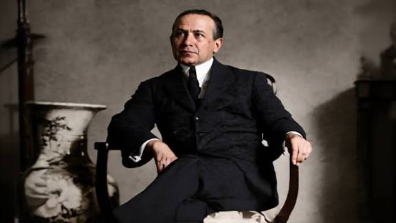

José Antonio Encinas Franco
Educador, Antropólogo y Reformador de la Educación Peruana
Puno, 30 de mayo de 1888 - Lima, 10 de julio de 1958. Fue un educador que defendió una educación para la mayoría. Construyó una doctrina educativa que sirviera a la niñez y juventud peruanas, por eso nuestra I.E. 81025 lleva con orgullo su nombre.
"No hay cargo más alto, en la sociedad, que el ser maestro."
1. Sus Inicios en Puno
Hijo de Mariano Encinas y Matilde Franco. Estudió en el Glorioso Colegio Nacional de San Carlos de Puno. Fue becado a la Escuela Normal de Varones de Lima (1905-1906), antecesora de La Cantuta.
En 1907, con solo 19 años, es nombrado Director del Centro Escolar de Varones 881 de Puno, donde inicia la experiencia pedagógica de la Primera Escuela Nueva en el Perú.
2. Formación Internacional
- Bachiller y Doctor en Letras y Jurisprudencia - UNMSM
- M.Sc. en Antropología - Universidad de Cambridge, Inglaterra
- Doctor en Ciencias de la Educación - Universidad de La Sorbona, París
- Estudios en Bolonia, Padua y Oxford. Becario Carnegie 1927
- Profesor de Psicología en la Universidad de San Carlos de Guatemala
3. Vida Política y Exilio
Diputado por Puno en 1919 para la Asamblea que dio la Constitution de 1920. Diputado por Lima hasta 1924. Su oposición a la reelección de Leguía le valió ser deportado a Guatemala.
A su retorno en 1930 tras la caída de Leguía, fue nombrado Rector de la Universidad Nacional Mayor de San Marcos en 1931. Entre 1933 y 1950 fue desterrado 3 veces. Senador por Puno en 1945 y reelecto en 1950.
4. Su Legado: El Plan Dalton
El 30 de mayo de 1933 funda junto a sus hermanos el Colegio Dalton en Lince, Lima, para poner en práctica el innovador sistema de la pedagoga norteamericana Helen Parkhurst.
¿Por qué nuestro colegio lleva su nombre? Porque Encinas luchó por una escuela pública, gratuita, crítica y centrada en el niño, no en la memorización. Su obra "Un Ensayo de Escuela Nueva en el Perú" (1932) es la base de la educación moderna peruana.
• Un Ensayo de escuela nueva en el Perú
• La educación: su función social
• Causas de la Criminalidad Indígena
• Historia de las universidades de Bolonia y Padua